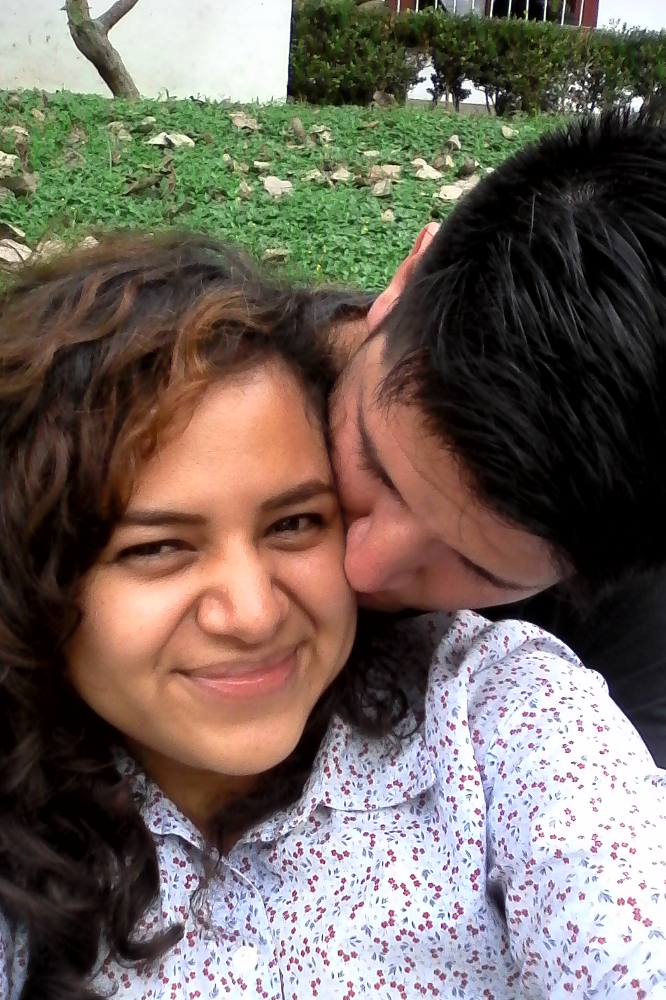

Hace mucho tiempo...
La historia de esta increíble pareja inicia en un lugar llamado Presencia Manifiesta, lugar donde fueron presentados en el año de 2008. Tras unos meses se convirtieron en "befos"... Bueno, tal vez no, pero sí en buenos amigos. En ese tiempo, ellos eran las únicas personas de la misma edad dentro del grupo de amigos en aquel lugar, por lo que la atracción pronto se hizo notar.
Pero, ¿Cómo empezó realmente? Existen muchas versiones que rondan en torno a esta historia, y aunque la verdad muchos de nosotros jamás la conoceremos, sabemos que fue él quien se enamoró locamente de ella... Ok, eso tampoco es del todo cierto, en realidad a ella le gustó él primero, pero él no lo sabía.
La amistad entre Febe y Cristhian surge a través de la amistad de Cristhian y Ana Karen (la hermana menor de Febe), quien se convirtió en el lazo entre los ahora enamorados. Él la empezó a buscar cada día con mayor esmero, y todo empezó a tomar forma, pero a pesar de todo, durante ese tiempo no existió algo concreto, por lo que ambos pensaron que lo mejor era tomarse su tiempo y pensar un poco mejor las cosas antes de seguir algo prematuramente.
Pasó el tiempo y pronto llegó el año 2013, año en el cual ella se mudó a Álamo, hogar de sus padres en el norte del Estado de Veracruz, pero ellos se volverían a encontrar cuando ella volvió a Xalapa al año siguiente, donde la atracción mutua no se hizo esperar, sin embargo, a pesar de todo el pasado que vivieron, esta vez su relación tomó un rumbo más sólida.
